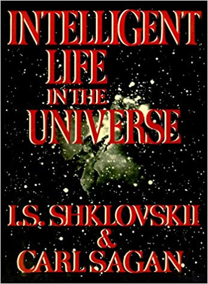
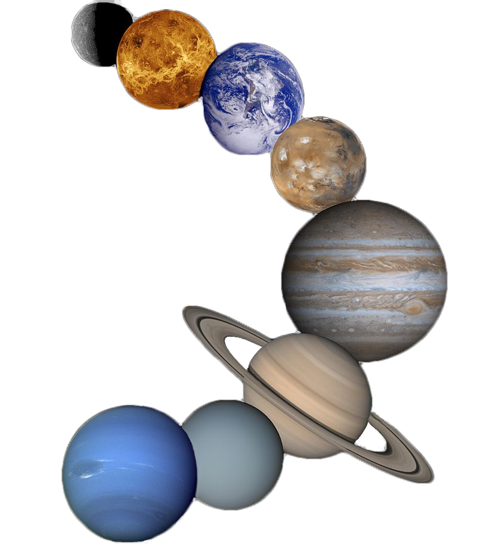

JAN 5, 1950- Sagan started working as an advisor for NASA
JAN 5, 1950- Sagan started working as an advisor for NASA
NOV 17, 1966- 1st achieved national attention with his book "intelligent life in the universe"
 AUG 18, 1968- Named director of Cornell's laboratory for planetary studies
 MAY 15, 1980- television series Cosmos: a personal voyage aired
MAY 15, 1980- television series Cosmos: a personal voyage aired
 JUN 11, 1983-Sagan introduced the idea of "Nuclear Winter"
JUN 11, 1983-Sagan introduced the idea of "Nuclear Winter"